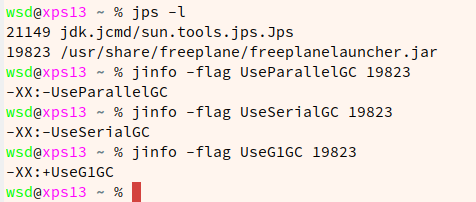
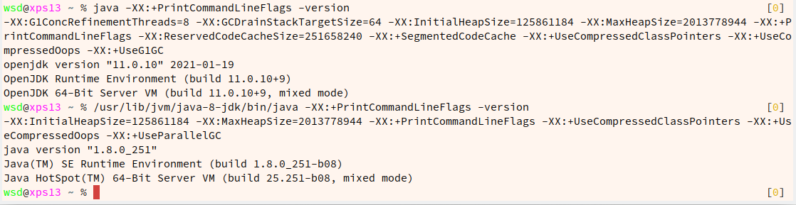

排错记录
编译过程没问题，执行时报错：
Exception in thread “main” java.lang.ClassFormatError: Field “out” in class test has illegal signature “Ljava/io/PrintStream”
错误原因：在产生字节码的过程中，调用PrintStream忘记加分号1
2methodVisitor.visitFieldInsn(GETSTATIC, "java/lang/System", "out",
"Ljava/io/PrintStream");
应为：1
2methodVisitor.visitFieldInsn(GETSTATIC, "java/lang/System", "out",
"Ljava/io/PrintStream;");
JVM结构
1.类加载器
2.运行时数据区
3.执行引擎
4.本地方法库
double和long需要占据2个slot，其余基本类型和引用都是1个slot。
slot可以重复利用
垃圾回收（Garbage Collection）
查看Java进程使用的垃圾回收器：

查看默认垃圾回收器

JVM字节码
解析一个接口
接口定义：1
2
3
4package edu.ustb.spesc.element;
public interface InterfaceLook {
}
javap -v 结果：1
2
3
4
5
6
7
8
9
10
11
12
13
14
15
16
17
18Classfile /home/wsd/STEM/Experiments/SPESC-Java-Compiler/compiler/target/test-classes/edu/ustb/spesc/element/InterfaceLook.class
Last modified Apr 1, 2021; size 130 bytes
MD5 checksum 849d09ca95f1ed5733cca527dce9ed9c
Compiled from "InterfaceLook.java"
public interface edu.ustb.spesc.element.InterfaceLook
minor version: 0
major version: 52
flags: ACC_PUBLIC, ACC_INTERFACE, ACC_ABSTRACT
Constant pool:
#1 = Class #5 // edu/ustb/spesc/element/InterfaceLook
#2 = Class #6 // java/lang/Object
#3 = Utf8 SourceFile
#4 = Utf8 InterfaceLook.java
#5 = Utf8 edu/ustb/spesc/element/InterfaceLook
#6 = Utf8 java/lang/Object
{
}
SourceFile: "InterfaceLook.java"
解析一个类
类定义：1
2
3
4package edu.ustb.spesc;
public class bytecodeTest {
}
javap -v 结果：1
2
3
4
5
6
7
8
9
10
11
12
13
14
15
16
17
18
19
20
21
22
23
24
25
26
27
28
29
30
31
32
33
34
35
36
37
38
39
40Classfile /home/wsd/STEM/Experiments/SPESC-Java-Compiler/compiler/target/test-classes/edu/ustb/spesc/bytecodeTest.class
Last modified Apr 1, 2021; size 291 bytes
MD5 checksum 58439c875ed1b27cf7a5a68507efbf13
Compiled from "bytecodeTest.java"
public class edu.ustb.spesc.bytecodeTest
minor version: 0
major version: 52
flags: ACC_PUBLIC, ACC_SUPER
Constant pool:
#1 = Methodref #3.#13 // java/lang/Object."<init>":()V
#2 = Class #14 // edu/ustb/spesc/bytecodeTest
#3 = Class #15 // java/lang/Object
#4 = Utf8 <init>
#5 = Utf8 ()V
#6 = Utf8 Code
#7 = Utf8 LineNumberTable
#8 = Utf8 LocalVariableTable
#9 = Utf8 this
#10 = Utf8 Ledu/ustb/spesc/bytecodeTest;
#11 = Utf8 SourceFile
#12 = Utf8 bytecodeTest.java
#13 = NameAndType #4:#5 // "<init>":()V
#14 = Utf8 edu/ustb/spesc/bytecodeTest
#15 = Utf8 java/lang/Object
{
public edu.ustb.spesc.bytecodeTest();
descriptor: ()V
flags: ACC_PUBLIC
Code:
stack=1, locals=1, args_size=1
0: aload_0
1: invokespecial #1 // Method java/lang/Object."<init>":()V
4: return
LineNumberTable:
line 3: 0
LocalVariableTable:
Start Length Slot Name Signature
0 5 0 this Ledu/ustb/spesc/bytecodeTest;
}
SourceFile: "bytecodeTest.java"
由于JVM解析Java文件是按照行来解析的，一行Java代码可能对应多行字节码，所以设置 LineNumberTable 这个属性就是表示java文件的某行与字节码某行的对应关系。
比如上面的显示 line 3: 0 就表示bytecodeTest.java的第3行对应解析到jvm字节码的第0行即 aload_0
Slot是字节码中的存储单位，1个Slot大小为32bit（4 bytes）